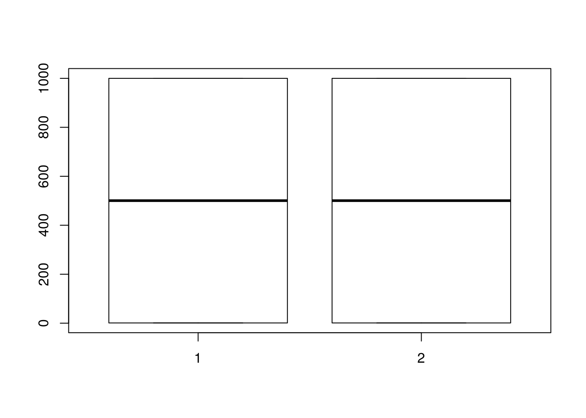
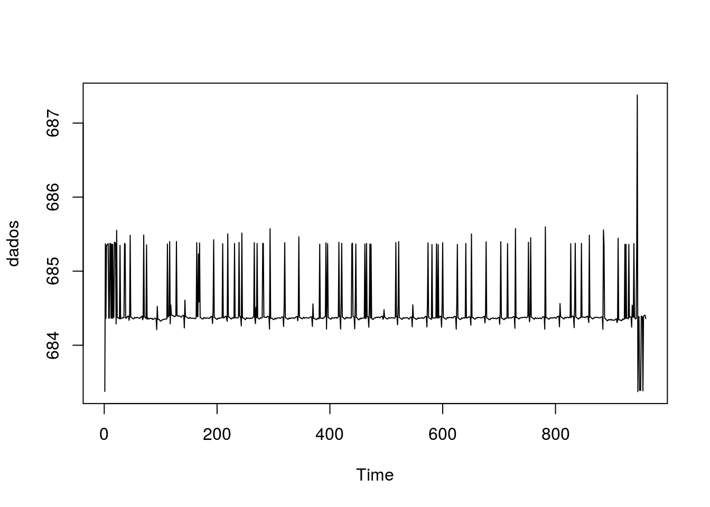
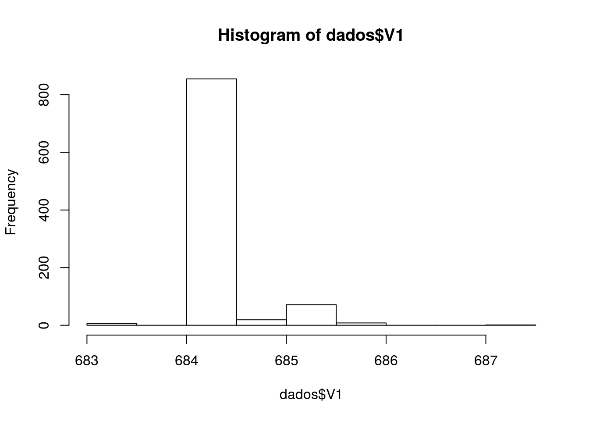
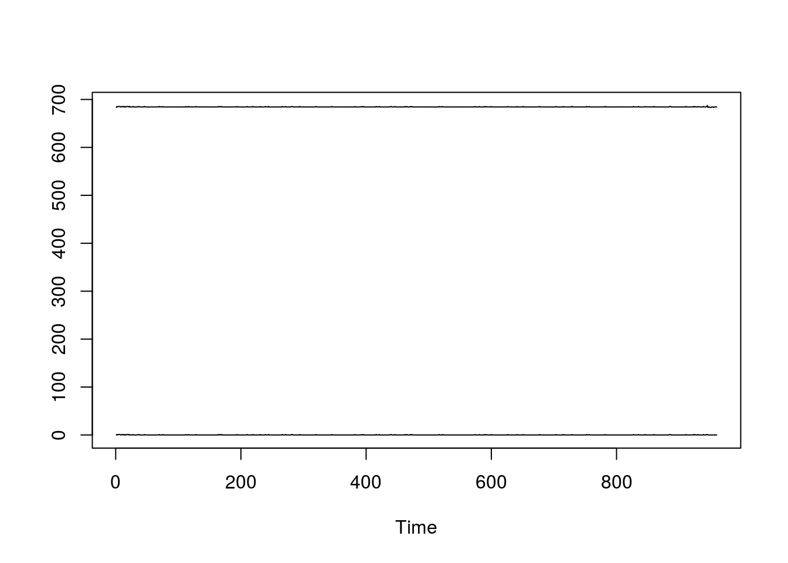
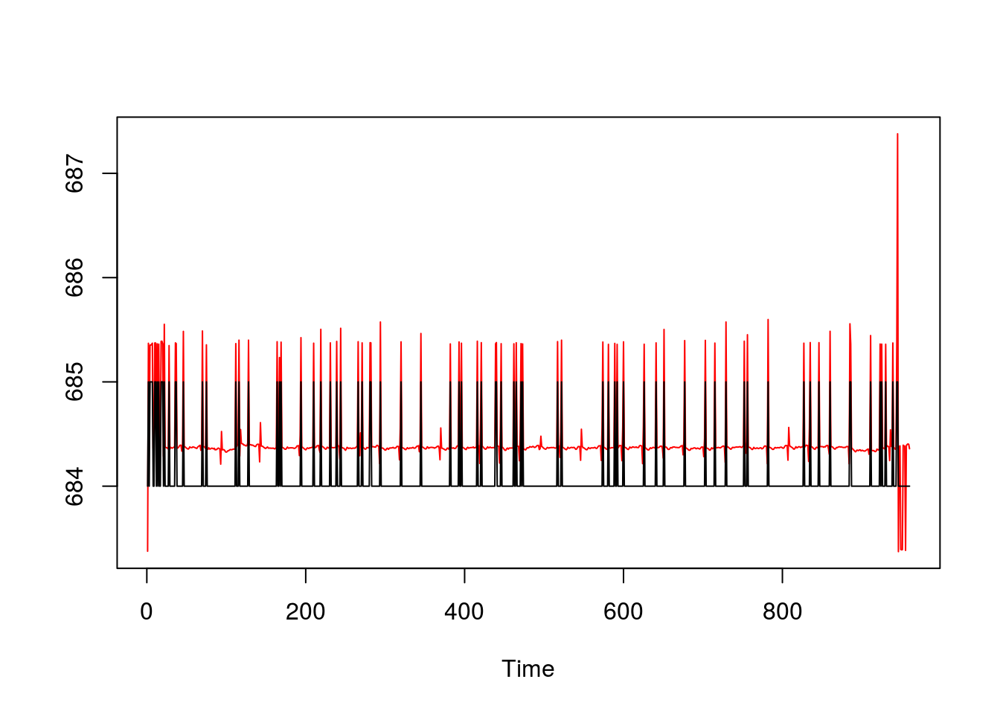
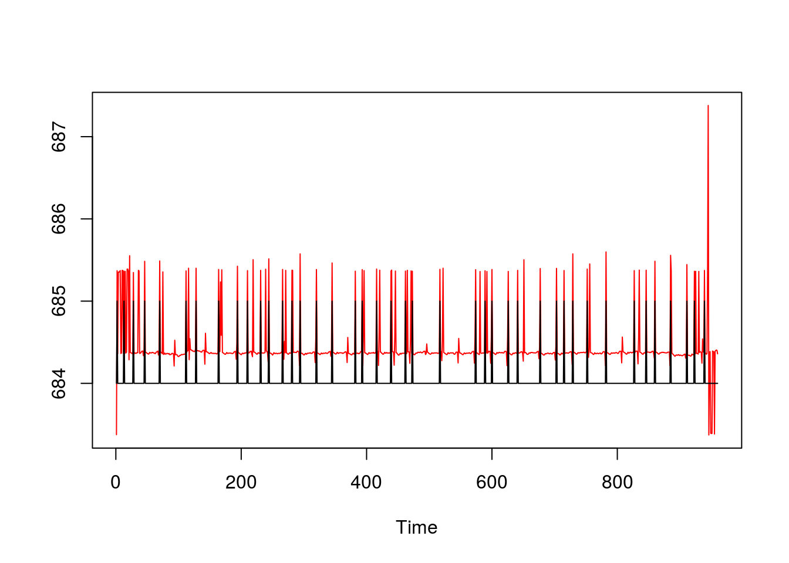

O R é um software importante para análise de dados estatísticos. Apesar de não ter uma interface gráfica , a usabilidade é melhor para personificação das análises e permite mais opções para visualização e análise de dados.
Para armazenar um valor a uma variável, simplesmente usamos:
x = 3.7O vetor é uma estrutura de dados básica do R, que permite armazenar um conjunto de valores numéricos ou de caractere sob um mesmo tipo.
x = c(1, 2, 3, 4)
x## [1] 1 2 3 4Para criar um vetor com repetidos valores, por exemplo uma repetição de zeros, utiliza-se:
x = array(0, 100)
x## [1] 0 0 0 0 0 0 0 0 0 0 0 0 0 0 0 0 0 0 0 0 0 0 0 0 0 0 0 0 0 0 0 0 0 0 0
## [36] 0 0 0 0 0 0 0 0 0 0 0 0 0 0 0 0 0 0 0 0 0 0 0 0 0 0 0 0 0 0 0 0 0 0 0
## [71] 0 0 0 0 0 0 0 0 0 0 0 0 0 0 0 0 0 0 0 0 0 0 0 0 0 0 0 0 0 0Para criar uma matriz, utiliza-se uma estrutura similar.
x = matrix(1, 2, 2)
x## [,1] [,2]
## [1,] 1 1
## [2,] 1 1Atribuindo algum valor (1000) ao intervalo, no caso primeira linha:
x[1,]=1000
# Saída da matriz inteira com 1000 na primeira linha e 1 no resto:
x## [,1] [,2]
## [1,] 1000 1000
## [2,] 1 1Caso queira exibir uma única linha ou coluna, basta digitar o comando com a linha ou coluna desejada:
# Coluna
x[,2]## [1] 1000 1#Linha:
x[2,]## [1] 1 1Listas são objetos que podem armazenar objetos de dados de tipos diferentes. É possível incluir data.frames, arrays, matrizes, vetores, fatores e mesmo listas em uma lista.
list=list()
list$nome = "joao"
list$idade = 40
list$vetor=c(1,2,3)
list$nome## [1] "joao"# Saída:
list## $nome
## [1] "joao"
##
## $idade
## [1] 40
##
## $vetor
## [1] 1 2 3Para realizar uma repetição com variável de controle, o comando for() incrementa um índice dentro de uma sequência de valores.
for(i in 1:10){
print (i)
}## [1] 1
## [1] 2
## [1] 3
## [1] 4
## [1] 5
## [1] 6
## [1] 7
## [1] 8
## [1] 9
## [1] 10Para reaizar uma repetição pré-testada, o teste para sair do laço de repetição é realizado antes de entrar no laço, e para isso utilizamos a função while():
i=1
while(i<=10){
print (i)
i=i+1
}## [1] 1
## [1] 2
## [1] 3
## [1] 4
## [1] 5
## [1] 6
## [1] 7
## [1] 8
## [1] 9
## [1] 10Ou outro exemplo:
i=1
while(i<=10){
print (i)
if (i<=5) {
print("menor ou igual a 5")
}
else{
print("maior que 5")
}
i=i+1
}## [1] 1
## [1] "menor ou igual a 5"
## [1] 2
## [1] "menor ou igual a 5"
## [1] 3
## [1] "menor ou igual a 5"
## [1] 4
## [1] "menor ou igual a 5"
## [1] 5
## [1] "menor ou igual a 5"
## [1] 6
## [1] "maior que 5"
## [1] 7
## [1] "maior que 5"
## [1] 8
## [1] "maior que 5"
## [1] 9
## [1] "maior que 5"
## [1] 10
## [1] "maior que 5"No R, o índice i for imutável, recomenda-se utilizar o “for” como opção de repetição.
A Estatística Descritiva está diretamente ligada à organização e descrição dos dados. É utilizada para sumarizar como as observações se distribuem e onde estão posicionadas (ex.: medidas de tendência central e dispersão) e como se apresentam em termos de associação. Os conceitos e métodos descritivos são ponto de partida da análise exploratória de dados, passo fundamental para análises estatísticas mais avançadas.
Considerando a matriz criada x,
x## [,1] [,2]
## [1,] 1000 1000
## [2,] 1 1temos as seguintes funções para estatística descritiva:
# Média:
mean(x)## [1] 500.5# Desvio padrão
sd(x)## [1] 576.7729# Distribuição normal:
rnorm(x)## [1] -0.2941549 -0.5695707 -1.1018875 1.4181125# Boxplot:
boxplot(x)
A primeira vista, pode parecer contraintuitivo que num curso de Processamento de Sinais Neurais contenha análise de dados de Eletrocardiograma (ECG). Dentre os parâmetros que podem ser aferidos a partir do ECG é a frequência cardíaca (número de batimentos do coração que acontecem a cada minuto - bpm). A freqüência cardíaca é capaz de indicar uma ativação geral do sistema nervoso autônomo, responsável por controlar nossas reações corporais involuntárias. Ao expor uma pessoa em situações de maior demanda energética, o coração bate mais forte e mais rápido.
O uso do ECG fornece dados informativos acerca dos processos psicofisiológicos em diversas situações, sendo altamente aplicável em estudos que investigam as respostas comportamentais como por exemplo de consumidores ou outros entrevistados.
Na aula o professor disponibilizou dados de um arquivo em que ele coletou dados de ECG de si mesmo (a partir de um arduino). O arquivo contém uma única coluna que é o valor em mV coletado com o instrumento:
dados = read.table("ecg.txt", header = FALSE)Para visualizar os dados da forma de série temporal, utiliza-se a função ts.plot(). Algumas versões do R Studio contém um problema para visualização dos dados, então utiliza-se a seguinte gambiarra recomendada pelo Stackoverflow:
# Pra não dar erro "figure margins too large" no ts.plot:
graphics.off()
par("mar")## [1] 5.1 4.1 4.1 2.1par(mar=c(1,1,1,1))Após implementar essas linhas, na sequência, visualizamos os dados com a função:
# Plotando gráfico de linha - ECG
ts.plot(dados)
Um histograma pode ajudar a melhorar a visualização da amplitude do sinal:
hist(dados$V1)
Para fins de referência, consideremos como picos de batimentos os valores com resultados acima de 685mV, então destacaríamos os maiores:
# Para percorrer todas as casas dos dados, detectando os picos:
picos=array(0, nrow(dados))
for(i in 1:960){
if(dados$V1[i]>685){
picos[i]=1
}
}
# Unindo no plot as colunas de dados e picos
ts.plot(cbind(dados$V1, picos))
# Como pode ver, ficou zoado, então ajustamos a escala e adicionamos cores para que se possa visualizar os dados:
# cores: col 2 = preto e 1 vermelho
ts.plot(cbind(dados$V1, picos+684), col=c(2,1))
O ajuste ainda não ficou muito claro. Toda vez que encontrar um pico, os valores conseguintes referem-se ao mesmo pico, ou seja, devemos limpar os dados (retirada de picos contínuos adjacentes). Neste caso, escolhemos ignorar os picos dos 10 dados seguintes ao primeiro pico.
Nota: Para percorrer o vetor completo, basta percorrer o código até os 10 últimos (critério de parada) dados. Os demais picos seriam ignorados de qualquer forma e poderia reproduzir erro no vetor.
Dessa forma, teríamos:
for(i in 1:(nrow(dados)-10) ){
if(picos[i]==1){
picos[(i+1):(i+10)]=0
}
}
ts.plot(cbind(dados$V1,picos+684),col=c(2,1))